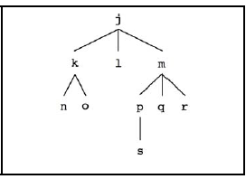

because we can have many children, but it is simpler because we only need a single
helper block
which reports a list of all our children (empty if we have no kids!). Examples:
because we can have many children, but it is simpler because we only need a single
helper block
which reports a list of all our children (empty if we have no kids!). Examples:
We would now like a list of us and all our descendants in no particular order (i.e., our children,
their children, etc.) by writing the block .
This problem is harder than
because we can have many children, but it is simpler because we only need a single
helper block
which reports a list of all our children (empty if we have no kids!). Examples:

children(j) reports (k l m)children(p) reports (s)children(l) reports ()me-and-my-descendants(j) reports (j k l m n o p q r s)me-and-my-descendants(k) reports (k n o)me-and-my-descendants(l) reports (l)
You can find a framework for the block under the "Descendants" sprite in the starter file.
Before you try making this block, run the setup descendants tree block by clicking the green flag.
Do not use any iteration (loops) to complete this block - you should only use recursion and/or HOFs.